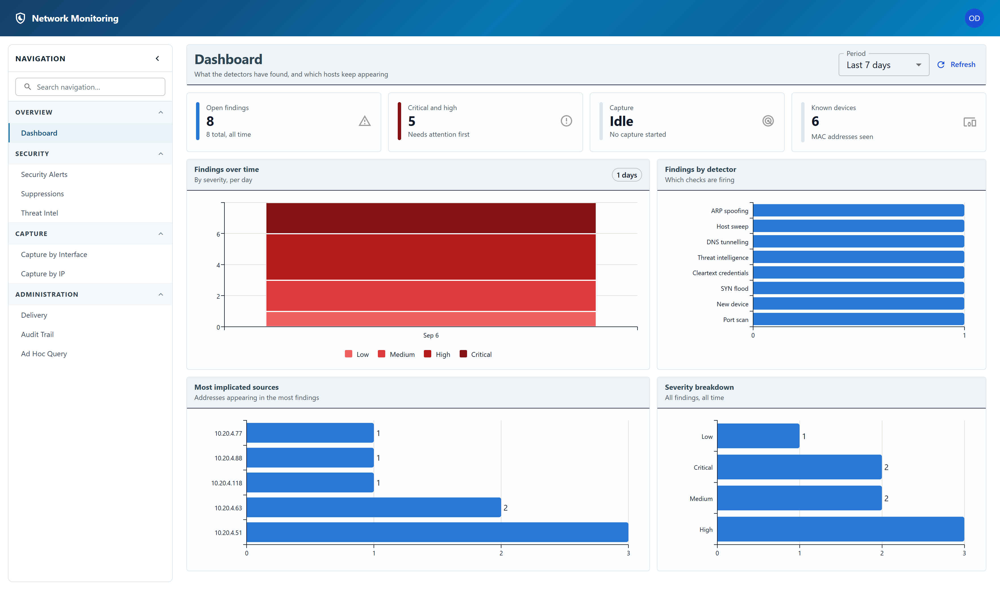

The dashboard
What the detectors have found, and which hosts keep appearing.
The Dashboard is where you arrive after signing in. It answers two questions: is anything happening that needs me, and is the system actually watching.

The period
The Period control at the top right sets the window every chart on the page is measured over. Refresh reloads it.
If more than one sensor reports to this installation, a Sensor control appears beside it and narrows the whole page to one of them. It is hidden when there is only one sensor, which is the usual case. See More than one sensor.
The four tiles across the top do not all honour that window, and the difference matters:
| Tile | What it counts |
|---|---|
| Open findings | Findings nobody has acknowledged yet, all time. The number under it is the total. |
| Critical and high | Of those, the ones worth looking at first. |
| Capture | Whether a capture session is running right now, or Idle. Idle does not mean nothing is being detected — a flow collector, if you have one configured, feeds detection without a capture session. |
| Known devices | Distinct MAC addresses seen on the segment. On a network of phones using address randomisation this climbs on its own. |
The charts
- Findings over time — stacked by severity. The shape is the
point: a flat line that suddenly steps up is worth more attention than any single row
in the alerts table.
The bars get wider as the window does, so the chart stays readable rather than becoming a solid block: hourly for a day, daily out to three months, weekly out to a year, and monthly beyond that. The caption above the chart always says which. - Findings by detector — which checks are firing. One detector dominating usually means a suppression rule is wanted rather than an attack; see Suppression rules.
- Most implicated sources — the addresses appearing in the most findings.
- Severity breakdown — every finding held, by severity, all time.
Findings are kept in full for a limited period and then aggregated into daily totals, so a long window still has a shape after the detail has expired.
A dashed line marked Detail kept from here shows where that changes. To the right of it every bar is made of findings you can still open; to the left the counts are all that was kept, so a bar there means "this many happened", not "here is what happened". Without the line a short bar on the left is ambiguous — it could be a quiet week or an expired one — and that is exactly the distinction the rest of this product exists to preserve.
Every signed-in account can see the Dashboard, and everyone sees the same numbers — findings are not partitioned by account.